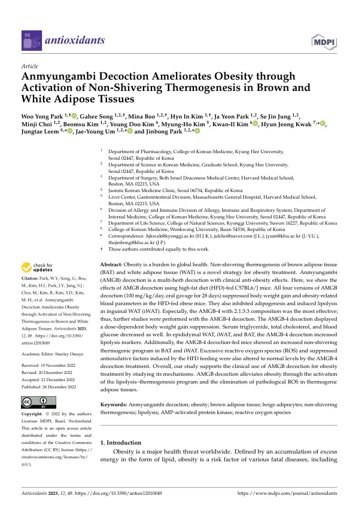

Anmyungambi Decoction Ameliorates Obesity through Activation of Non-Shivering Thermogenesis in Brown and White Adipose Tissues
Park WY, Song G, Boo M, Kim HI, Park JY, Jung SJ, Choi M, Kim B, Kim YD, Kim MH, Kim KI, Kwak HJ, Leem J, Um JY, Park J
Antioxidants 12(1):49

첫 장 · 오픈액세스First page · open access
논문 소개Summary
갈색지방과 백색지방의 비떨림 열생성은 비만 치료의 새로운 표적입니다. 몸을 떨지 않고도 열을 내어 에너지를 태우는 이 프로그램을 켜면 체중이 줄어들 수 있습니다. 안면감비탕은 임상에서 비만에 쓰이는 복합 처방이고 앞선 네트워크 약리 연구에서 지방분해와 열생성 경로가 후보로 지목되었습니다. 이 연구는 그 후보를 동물에서 확인한 실험입니다.
고지방식이를 먹인 C57BL6/J 생쥐에게 안면감비탕을 하루 100밀리그램퍼킬로그램씩 28일 동안 경구 투여했습니다. 배합비가 다른 네 가지 판을 모두 시험했고 네 가지 모두 체중 증가와 비만 관련 혈액 지표를 억제했으며 서혜부 백색지방에서 지방생성을 막고 지방분해를 일으켰습니다. 그 가운데 2대 1대 3대 3 배합의 네 번째 판이 가장 효과가 좋아 이후 연구를 그것으로 진행했습니다.
네 번째 판은 용량에 따라 체중 증가를 억제했고 혈청 중성지방과 총콜레스테롤, 혈당을 낮췄습니다. 부고환 백색지방과 서혜부 백색지방, 갈색지방 모두에서 지방분해 표지자가 늘었고, 갈색지방과 서혜부 백색지방에서 비떨림 열생성 프로그램이 켜졌습니다. 고지방식이로 과도해진 활성산소와 억눌린 항산화 인자도 정상 수준으로 돌아왔습니다.
읽을 때 지켜야 할 선이 있습니다. 이것은 생쥐에서 28일 동안 본 결과입니다. 사람에게 같은 일이 일어나는지, 어느 용량에서 그런지는 이 연구가 답하지 않습니다. 동물의 체중당 용량을 사람에게 그대로 옮길 수도 없습니다.
그럼에도 이 연구의 자리는 분명합니다. 임상에서 먼저 쓰이고 효과가 관찰된 처방에 대해, 계산으로 기전 후보를 좁힌 뒤 동물에서 그 경로가 실제로 움직이는지 확인하는 순서를 밟았습니다. 저자들은 이 결과가 안면감비탕의 임상 사용을 기전 쪽에서 뒷받침한다고 적었습니다.
Non-shivering thermogenesis in brown and white adipose tissue is a newer target in obesity treatment: switch on this programme, which burns energy as heat without shivering, and body weight may fall. Anmyungambi decoction is a multi-herb formula used clinically for obesity, and an earlier network pharmacology study had named lipolysis and thermogenesis pathways as candidates. This study tested those candidates in animals.
C57BL6/J mice fed a high-fat diet received Anmyungambi decoction by oral gavage at 100 mg/kg/day for 28 days. All four versions of the formula, differing in the ratio of their herbs, were tested; all four suppressed body weight gain and obesity-related blood parameters, inhibited adipogenesis and induced lipolysis in inguinal white adipose tissue. The fourth version, with a 2:1:3:3 composition, was the most effective, and further work proceeded with it.
That version suppressed body weight gain dose-dependently and lowered serum triglycerides, total cholesterol and blood glucose. Lipolysis markers rose in epididymal white, inguinal white and brown adipose tissue, and the non-shivering thermogenic programme was switched on in brown and inguinal white fat. Excessive reactive oxygen species and suppressed antioxidative factors induced by the high-fat diet also returned to normal levels.
A line should be kept when reading this. These are results in mice over 28 days. Whether the same happens in people, and at what dose, is not something this study answers, and a dose per body weight in animals cannot simply be carried across to humans.
The study's place is nonetheless clear. For a formula already used in the clinic and observed to work, the sequence ran from narrowing mechanistic candidates by computation to checking in animals whether those pathways actually move. The authors write that these findings support the clinical use of the decoction from the mechanistic side.
인용Cite
Park WY, Song G, Boo M, Kim HI, Park JY, Jung SJ, Choi M, Kim B, Kim YD, Kim MH, Kim KI, Kwak HJ, Leem J, Um JY, Park J. Anmyungambi Decoction Ameliorates Obesity through Activation of Non-Shivering Thermogenesis in Brown and White Adipose Tissues. Antioxidants. 2022;12(1):49. doi:10.3390/antiox12010049